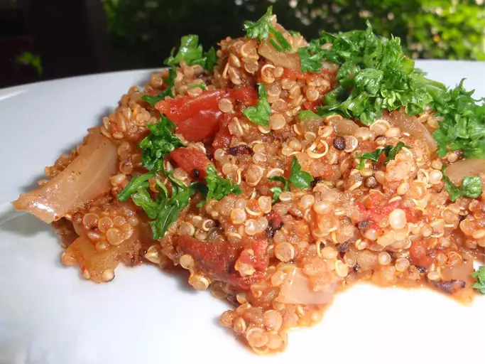

Mexican Quinoa

This Mexican-style quinoa can be a healthier alternative to Mexican or Spanish rice. The gluten-free quinoa adds protein, fiber, and great taste while keeping all the flavor and spices of your usual Mexican or Spanish rice dish.
Ingredients
- 1 tablespoon olive oil
- 1 cup quinoa, rinsed
- 1 small onion, chopped
- 2 cloves garlic, minced
- 1 jalapeno pepper, seeded and chopped (Optional)
- 1 (10 ounce) can diced tomatoes with green chile peppers (such as ROTEL)
- 1 envelope gluten-free taco seasoning mix
- 2 cups low-sodium chicken broth
- ¼ cup chopped fresh cilantro
Directions
- Heat olive oil in a large skillet over medium heat; cook and stir quinoa and onion in hot oil until onion is translucent, about 5 minutes. Add garlic and jalapeño pepper to quinoa mixture and cook until garlic is fragrant and slightly softened, 1 or 2 more minutes.
- Mix undrained can of diced tomatoes with green chile peppers, taco seasoning mix, and chicken broth into quinoa mixture. Bring to a boil, reduce heat to medium-low, and simmer until liquid has been absorbed, 15 to 20 minutes. Stir in cilantro.